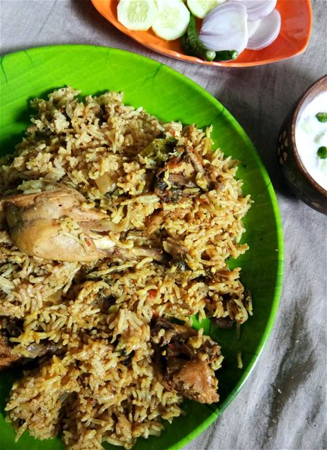

Biryani is a beloved and iconic dish in Indian cuisine, renowned for its flavorful and aromatic preparation. This fragrant dish typically consists of long-grain Basmati rice cooked with a blend of spices, herbs, and marinated meat (such as chicken, mutton, or shrimp) or vegetables. The ingredients are layered and cooked together, allowing the flavors to meld beautifully. Saffron-infused milk is often used to create the signature golden hue and add an extra layer of aroma and taste. Biryani can be found in various regional variations across India, with Hyderabadi, Lucknawi, and Kolkata biryanis being some of the most famous.
